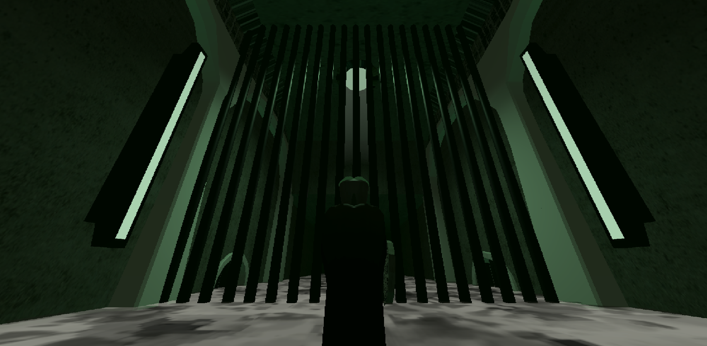
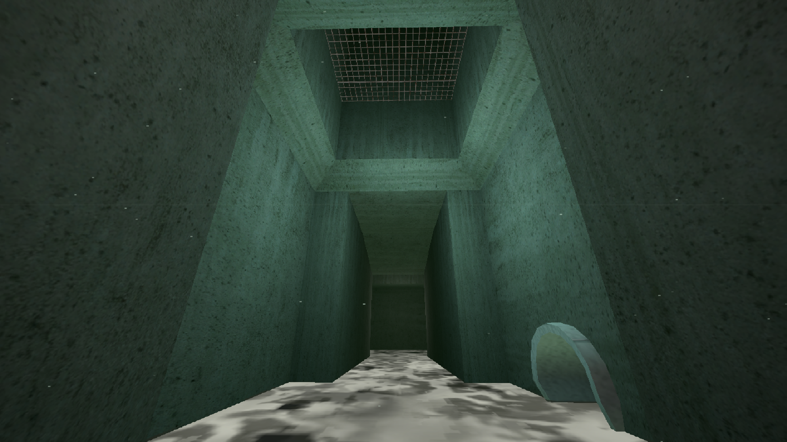
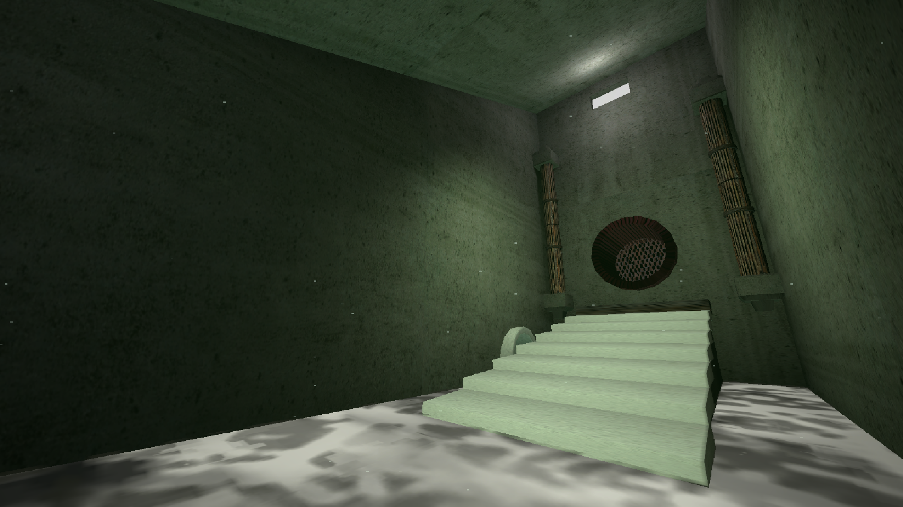
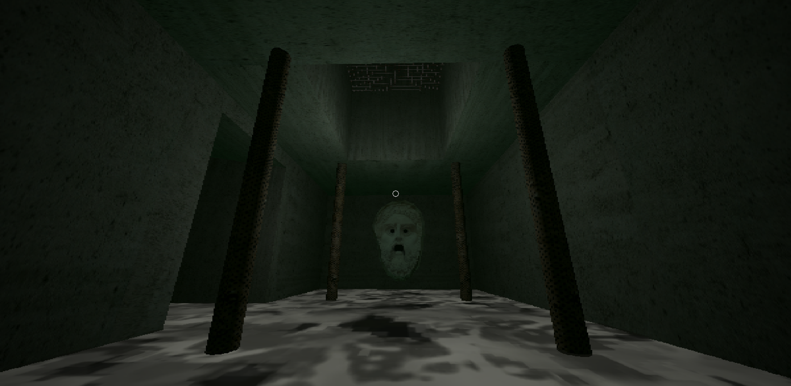
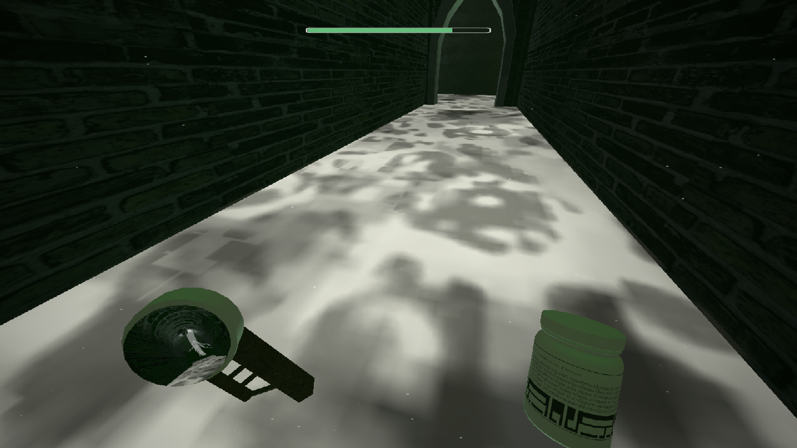
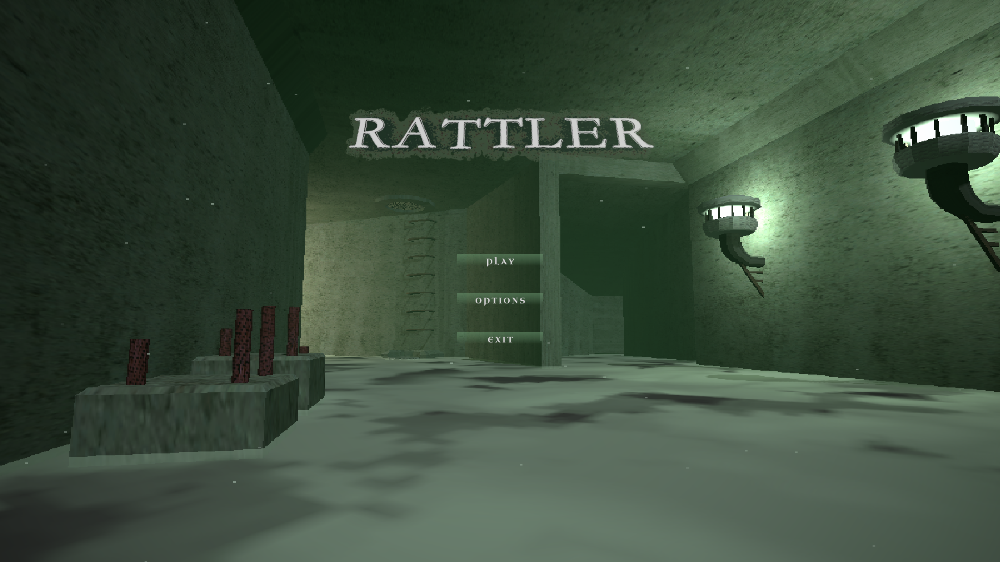

Rattler







Overview
This is a project I made in a month for a university project. It is heavily inspired by quakelikes and oldschool aesthetics, and it was largely a learning project where I practiced interior level design, texturing, mechanics, and sound effects.
It is meant to be more of a short prototype, but it does have a start, an end, a menu, brightness settings, and difficulty settings.
You play as a rattler, a person whose profession is exterminating spectral creatures that appear across city sewers. The goal is to kill the ghost by rattling your medication. Stay alive by eating your medication and avoiding the ghost.
Role and Contributions
This was a solo project, and every asset in the game was made solely by me. I mostly focused on level design for a chaser game and on a claustrophobic retro atmosphere.
I learned a lot about level metrics, grid-based interior design, and how to balance readable routes with tension in a small game space.
Engine and Tools
Unity, Photoshop, Gimp, Blender, Audacity, FL Studio 2024, Vital, Github.